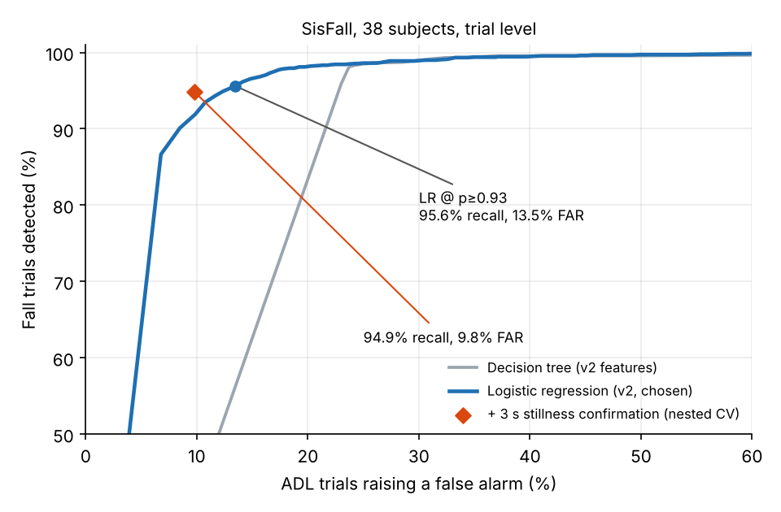

Fall detection (on-node edge AI)¶
The detector is designed to run on the wearable, so only the resulting alert travels over the mesh. Today it is exported to C and verified against the Python reference on the host; validation on the band itself is the next step.
Pipeline¶
graph LR
A["LSM6DS3TR-C<br/>52 Hz, ±16 g"] --> B["2 s window<br/>(104 samples)"]
B --> C["9 features<br/>magnitude + tilt"]
C --> D["Logistic regression<br/>p ≥ 0.93"]
D -- trigger --> E["3 s stillness check<br/>low motion, about 1 g"]
E -- confirmed --> F["Fall alert"]- Stage 1, IMU (machine learning): every 2 s window of accelerometer data is reduced to 9 features (magnitude statistics, jerk, low-g count, and the tilt change between before and after the impact) and scored by a logistic-regression model.
- Confirmation: a trigger only becomes an alert if the wearer then stays still for 3 s, as a person who has fallen typically does. This removes most false alarms from sitting down hard or similar movements.
- Stage 2, PPG (rule): a heart-rate check after the fall will classify the alert as critical or fall-only (future work).
Why logistic regression¶
Neural models (a TinyCNN on PPG data) did not reach the accuracy target. Classical models on hand-designed features did. Logistic regression gave the best recall/false-alarm trade-off at the trial level, and it fits on the node as 9 coefficients plus an intercept. The C export reproduces the Python model's output on every test vector.

Training pipeline¶
| Path | Contents |
|---|---|
src/ |
Feature extraction (features.py, features_v2.py), training (train.py), evaluation (eval_*.py), C export (export_c.py, export_final.py) |
include/ |
Exported model headers and the feature spec, shared with the firmware-side copy |
results/ |
Metrics, sweep tables, nested-CV fold results, plots |
data/ |
Dataset notes (raw SisFall data and derived feature CSVs are gitignored — regenerate locally) |
Dataset notes and rebuild steps: ml/fall-detection/data/README.md